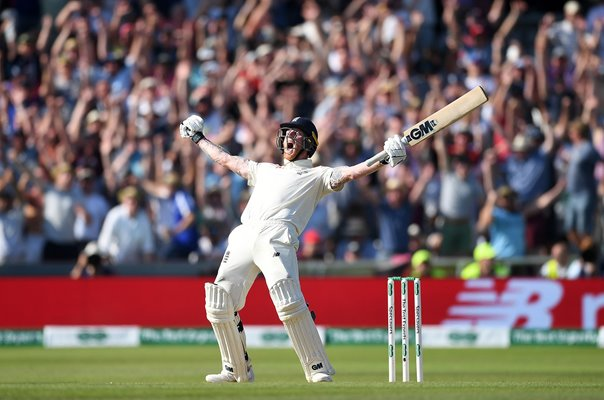
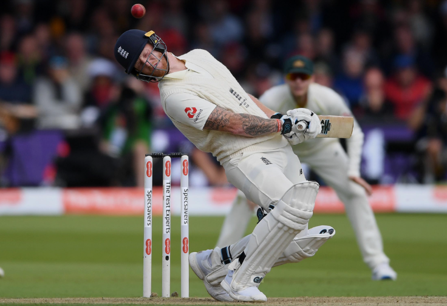

Què és el Test Cricket?
El Test és el format més llarg del cricket, es juga durant 5 dies.
El primer Test es va jugar el 1877 entre Austràlia i Anglaterra.
Es considera el format més difícil i prestigiós del cricket.
Tornar a l'iniciEl Test és el format més llarg del cricket, es juga durant 5 dies.
El primer Test es va jugar el 1877 entre Austràlia i Anglaterra.
Es considera el format més difícil i prestigiós del cricket.
Tornar a l'inici
